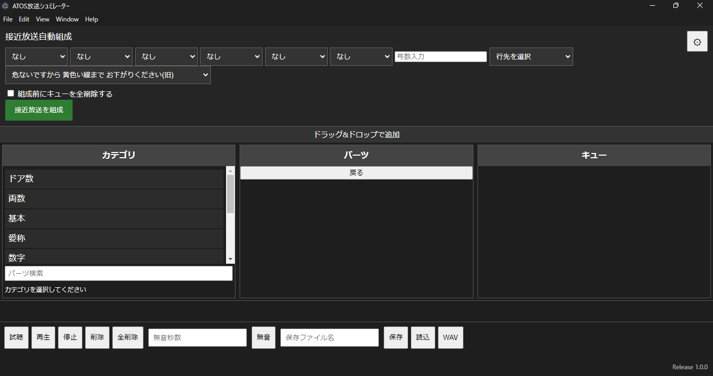
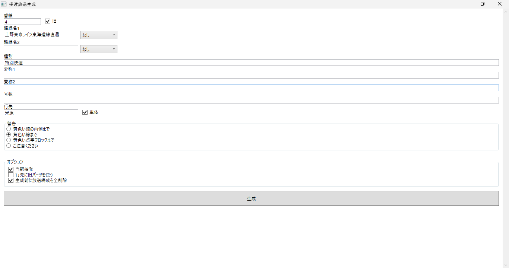

ATOS放送シュミレーターは、JR東日本型ATOS自動放送の音声パーツを自由に組み合わせ、 接近放送・次発予告放送などを高精度に再現・編集・出力できる デスクトップ専用放送再現ソフトです。
複数パーツのキュー編集、WAV出力、放送自動組成など、 実用性を重視した多数の機能を搭載しています。


最新版・旧版・ベータ版のダウンロードはこちら
DOWNLOAD PAGEへパーツのダウンロードはこちら
DOWNLOAD PAGEへMade by Hanwa Line Committee
JR自動放送再現・音声編集ソフト開発プロジェクト